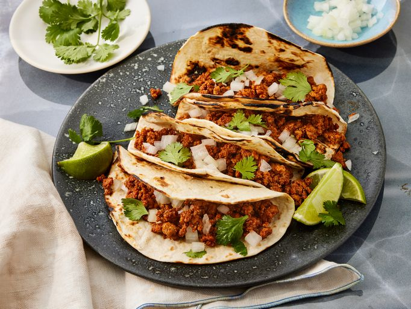

Ground Turkey Taco Meat

Description
A taco with spicy and different amazing flavors.
Ingredients
- 1 ½ tablespoons chili powder
- 2 teaspoons ground cumin
- 1 teaspoon ground paprika
- 1 teaspoon salt
- ½ teaspoon garlic powder
- ½ teaspoon onion powder
- ½ teaspoon dried oregano
- ¼ teaspoon cayenne pepper
- 12 ounces ground turkey
- ½ cup water
- 1 tablespoon cider vinegar
- 1 ½ teaspoons brown sugar
Steps
- Gather all ingredients.
-
Combine chili powder, cumin, paprika, salt, garlic,
onion powder, oregano, and cayenne in small bowl.
-
Heat a large nonstick skillet over medium heat. Add
ground turkey and cook stirring to break up clumps,
until no longer pink, about 5 minutes.
-
Stir in spice mixture and water. Reduce heat and simmer,
stirring occasionally, until most of the liquid is
absorbed, about 10 minutes.
-
Stir in cider vinegar and brown sugar; simmer until
flavors combine, 3 to 4 minutes.
- Transfer to a serving bowl.
- Serve and enjoy!
Home